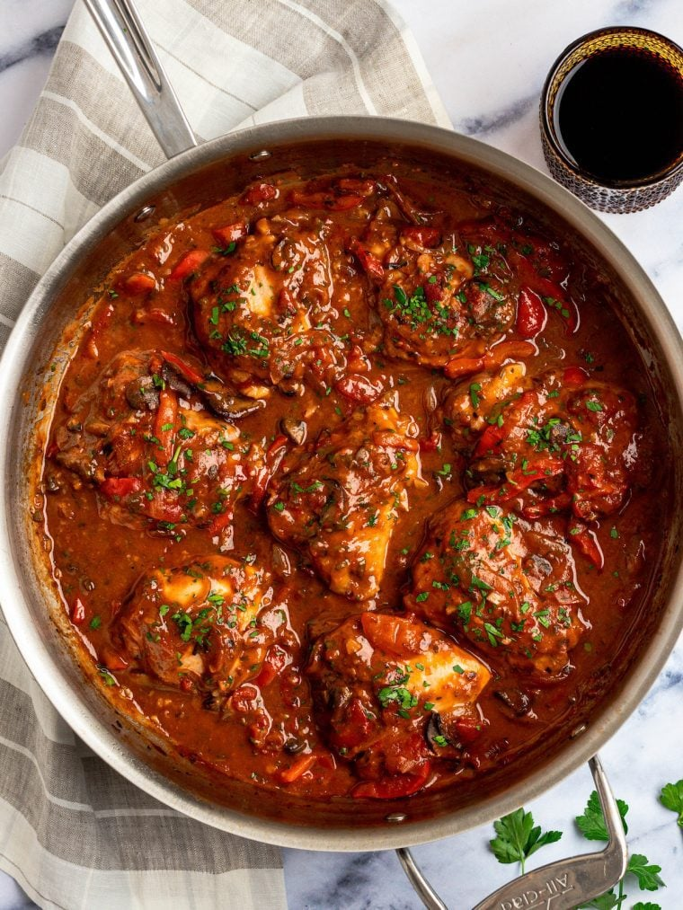

Instant Pot Chicken Cacciatore Recipe

Let's talk The Dish, Flavor Profile, and Healthy Alternatives!
This wonderful, traditionally slow-cooked recipe has been translated into a quick and easy pressure cooker
meal. Using the Instant Pot, you get an intensely flavorful meal remninicent of other great french derivative
quisine, made in minutes that will have your family thinking you simmered this all day. Following our step by
step guide you'll be cooking like the great chef Marco Pierre White in no time! Serve over spaghetti noodles,
rice, cauliflower rice, or eat as a stew!
Recipe Details
- Prep
15 mins
- Cook
40 mins
- Active
5 mins
- Total
1 hour
- Servings
4 servings
Ingredients You'll Need
- 4 (6 ounce) bone-in chicken thighs, with skin
- 2 tablespoons olive oil
- 1 (4 ounce) package sliced fresh mushrooms
- 3 stalks celery, chopped
- ½ onion, chopped
- 2 cloves garlic, minced
- 1 (14 ounce) can stewed tomatoes
- 2 tablespoons tomato paste
- 2 teaspoons herbes de Provence
- ¾ cup water
- 3 cubes chicken bouillon, crumbled
- 3 cubes chicken bouillon, crumbled
- 1 pinch ground black pepper to taste (Optional)
Step-By-Step
- Gather the ingredients.
- Rinse chicken thighs and pat dry with paper towels. Heat oil in the pot of an electric pressure cooker
(such as Instant Pot) on Sauté mode; add chicken. Cook until browned, about 6 minutes per side. Transfer
chicken to a plate, reserving drippings in the pot.
- Place mushrooms, celery, and onion in the pot; cook and stir until soft,
about 5 minutes. Add garlic; cook until fragrant, about 2 minutes. Place chicken back in the pot; add
tomatoes and tomato paste. Sprinkle with herbes de Provence. Top with water and bouillon.
- Close and lock the lid. Select high pressure according to manufacturer's instructions.
Allow 10 to 15 minutes for pressure to build. Cook for 11 minutes.
- Release pressure carefully using the quick-release method according to manufacturer's instructions,
about 5 minutes. Unlock and remove the lid carefully, turning it away from you. Test chicken for doneness;
an instant-read thermometer inserted near the bone should read 165 degrees F (74 degrees C). Season to taste
with red pepper flakes and black pepper.
Go Back or Check out our Other Recipes